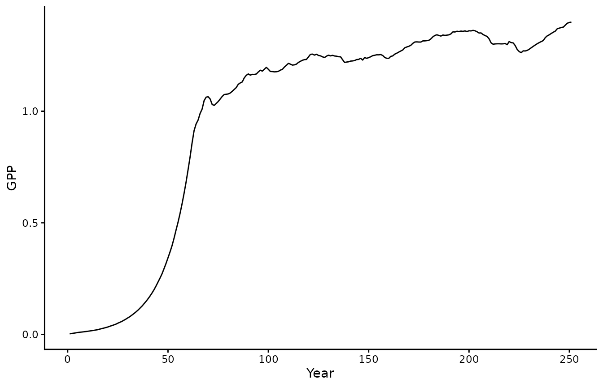
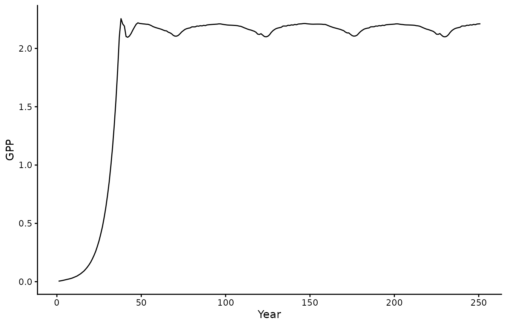
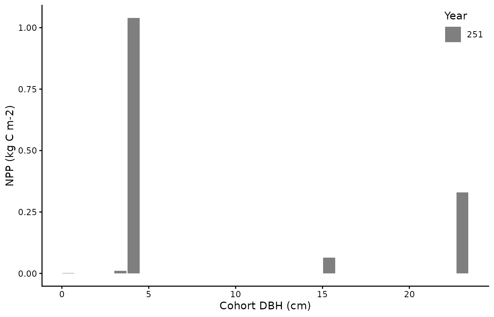
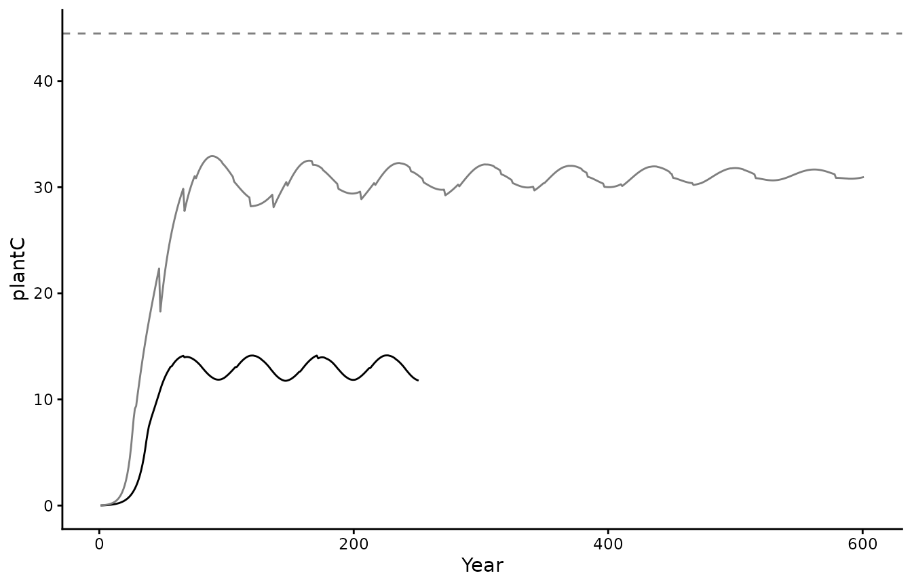

The rsofun package and framework includes two distinct
simulation models. The p-model and biomee
(which in part relies on p-model component). Below we give a short
example on how to run the biomee model on the included demo
datasets to familiarize yourself with both the data structure and the
outputs.
Demo data
The package includes two demo datasets to run simulations at the site CH-LAE with either the P-model or Leuning photosynthesis models. See below under ‘Two model approaches’ for a brief description of the differences. These demo files can be directly loaded into your workspace by typing:
These are real data from the Swiss CH-LAE fluxnet site. We can use
these data to run the model, together with observations of GPP we can
also parameterize biomee parameters.
Two model approaches
BiomeE is a cohort-based vegetation model which simulates vegetation dynamics and biogeochemical processes (Weng et al., 2015). The model is able to link photosynthesis standard models (Farquhar et al., 1980) with tree allometry. In our formulation we retain the original model structure with the standard photosynthesis formulation (i.e. “gs_leuning”) as well as an alternative “p-model” approach. Both model structures operate at different time scales, where the original input has an hourly time step our alternative p-model approach uses a daily time step. Hence, we have two different datasets as driver data (with the BiomeE p-model input being an aggregate of the high resolution hourly data).
Running the BiomeE model with standard photosynthesis
With all data prepared we can run the model using
runread_biomee_f(). This function takes the nested data
structure and runs the model site by site, returning nested model output
results matching the input drivers. In our case only one site will be
evaluated.
# print parameter settings
biomee_gs_leuning_drivers$params_siml
#> [[1]]
#> # A tibble: 1 × 10
#> spinupyears recycle firstyeartrend nyeartrend steps_per_day
#> <dbl> <dbl> <dbl> <dbl> <dbl>
#> 1 250 1 2009 1 24
#> # ℹ 5 more variables: do_U_shaped_mortality <lgl>, do_closedN_run <lgl>,
#> # method_photosynth <chr>, method_mortality <chr>, do_daily_diagnostics <lgl>
# print forcing
head(biomee_gs_leuning_drivers$forcing)
#> [[1]]
#> # A tibble: 8,760 × 9
#> date hod temp rain vpd ppfd patm wind co2
#> <date> <dbl> <dbl> <dbl> <dbl> <dbl> <dbl> <dbl> <dbl>
#> 1 2009-01-01 0 0.728 0.0000184 54.4 0.000000319 93216. 3.56 388.
#> 2 2009-01-01 1 0.780 0.0000116 54.9 0.000000322 93189. 3.37 388.
#> 3 2009-01-01 2 0.519 0.0000116 42.9 0.000000330 93184. 3.01 388.
#> 4 2009-01-01 3 0.476 0.0000116 47.3 0.000000311 93166. 3.31 388.
#> 5 2009-01-01 4 0.336 0.0000140 44.3 0.000000322 93143. 3.23 388.
#> 6 2009-01-01 5 0.278 0.0000140 38.4 0.000000329 93124. 2.94 388.
#> 7 2009-01-01 6 0.0966 0.0000140 28.5 0.000000329 93114. 2.98 388.
#> 8 2009-01-01 7 0.172 0.0000211 28.4 0.000000335 93111. 3.46 388.
#> 9 2009-01-01 8 0.236 0.0000211 30.1 0.0000179 93118. 3.31 388.
#> 10 2009-01-01 9 0.152 0.0000211 24.1 0.0000789 93132. 3.27 388.
#> # ℹ 8,750 more rows
set.seed(2023)
# run the model
out <- runread_biomee_f(
biomee_gs_leuning_drivers,
makecheck = TRUE,
parallel = FALSE
)
# split out the annual data
biomee_gs_leuning_output_annual_tile <- out$data[[1]]$output_annual_tile
biomee_gs_leuning_output_annual_cohorts <- out$data[[1]]$output_annual_cohortsPlotting output
We can now visualize the model output.
# we only have one site so we'll unnest
# the main model output
biomee_gs_leuning_output_annual_tile |>
ggplot() +
geom_line(aes(x = year, y = GPP)) +
theme_classic()+labs(x = "Year", y = "GPP")
biomee_gs_leuning_output_annual_tile |>
ggplot() +
geom_line(aes(x = year, y = plantC)) +
theme_classic()+labs(x = "Year", y = "plantC")Running the BiomeEP model
Running BiomeE with P-model photosynthesis.
# print parameter settings
biomee_p_model_drivers$params_siml
#> [[1]]
#> # A tibble: 1 × 10
#> spinupyears recycle firstyeartrend nyeartrend steps_per_day
#> <dbl> <dbl> <dbl> <dbl> <dbl>
#> 1 250 1 2009 1 1
#> # ℹ 5 more variables: do_U_shaped_mortality <lgl>, do_closedN_run <lgl>,
#> # method_photosynth <chr>, method_mortality <chr>, do_daily_diagnostics <lgl>
# print forcing for P-model
head(biomee_p_model_drivers$forcing)
#> [[1]]
#> # A tibble: 365 × 9
#> date hod temp rain vpd ppfd patm wind co2
#> <date> <dbl> <dbl> <dbl> <dbl> <dbl> <dbl> <dbl> <dbl>
#> 1 2009-01-01 11.5 0.384 0.0000166 39.5 0.0000571 93092. 3.00 388.
#> 2 2009-01-02 11.5 -1.64 0.0000232 40.5 0.0000499 93248. 2.97 388.
#> 3 2009-01-03 11.5 -2.51 0.00000371 75.9 0.0000949 93684. 2.84 388.
#> 4 2009-01-04 11.5 -1.82 0.0000130 88.0 0.0000706 93435. 2.67 388.
#> 5 2009-01-05 11.5 -1.34 0.0000223 67.8 0.0000739 93175. 3.21 388.
#> 6 2009-01-06 11.5 -0.450 0.0000219 54.0 0.0000528 93282. 3.03 388.
#> 7 2009-01-07 11.5 0.266 0.0000136 64.1 0.0000711 93511. 2.64 388.
#> 8 2009-01-08 11.5 0.504 0.0000113 88.2 0.0000905 93443. 2.68 388.
#> 9 2009-01-09 11.5 0.0869 0.0000186 59.9 0.0000516 93447. 2.74 388.
#> 10 2009-01-10 11.5 -0.404 0.0000125 58.6 0.0000827 93633. 2.17 388.
#> # ℹ 355 more rows
# run the model
out <- runread_biomee_f(
biomee_p_model_drivers,
makecheck = TRUE,
parallel = FALSE
)
# split out the annual data for visuals
biomee_p_model_output_annual_tile <- out$data[[1]]$output_annual_tile
biomee_p_model_output_annual_cohorts <- out$data[[1]]$output_annual_cohortsPlotting output
We can now visualize the model output.
# we only have one site so we'll unnest
# the main model output
biomee_p_model_output_annual_tile %>%
ggplot() +
geom_line(aes(x = year, y = GPP)) +
theme_classic() +
labs(x = "Year", y = "GPP")
biomee_p_model_output_annual_tile %>%
ggplot() +
geom_line(aes(x = year, y = plantC)) +
theme_classic() +
labs(x = "Year", y = "plantC")
biomee_p_model_output_annual_cohorts %>%
group_by(cID,year) %>%
summarise(dbh = mean(DBH),
npp_per_m2=sum(NPP*density/10000), .groups = "keep") %>%
ggplot(aes(x=dbh,y=npp_per_m2,fill=as.factor(year))) +
geom_bar(stat="identity") +
theme_classic()+labs(x = "Cohort DBH (cm)", y = "NPP (kg C m-2)", fill="Year") +
scale_fill_manual(values = c("grey50")) +
theme(legend.position = c(1.0,1.0), legend.justification = c(1.0,1.0))
#> Warning: A numeric `legend.position` argument in `theme()` was deprecated in ggplot2
#> 3.5.0.
#> ℹ Please use the `legend.position.inside` argument of `theme()` instead.
#> This warning is displayed once every 8 hours.
#> Call `lifecycle::last_lifecycle_warnings()` to see where this warning was
#> generated.
Calibrating model parameters
To optimize new parameters based upon driver data and a validation
dataset we must first specify an optimization strategy and settings, as
well as parameter ranges. In this example, we use as cost the root mean
squared error (RMSE) between simulated and observed targets (GPP, LAI,
Density and Biomass) and we minimize it using the GenSA
optimizer.
# Mortality as DBH
settings <- list(
method = "GenSA",
metric = cost_rmse_biomee,
control = list(
maxit = 10,
verbose = TRUE
),
par = list(
phiRL = list(lower=0.5, upper=5, init=3.5),
LAI_light = list(lower=2, upper=8, init=3.5),
tf_base = list(lower=0.5, upper=1.5, init=1),
par_mort = list(lower=0.005, upper=4, init=0.5))
)
# Using BiomeEP (with P-model for photosynthesis)
pars_all <- calib_sofun(
drivers = biomee_p_model_drivers,
obs = biomee_validation,
settings = settings
)
pars <- pars_all["par"]Using the calibrated parameter values, we can run again the BiomeE simulations.
# replace parameter values by calibration output
drivers <- biomee_p_model_drivers
drivers$params_species[[1]]$phiRL[] <- pars$par[1]
drivers$params_species[[1]]$LAI_light[] <- pars$par[2]
drivers$params_tile[[1]]$tf_base <- pars$par[3]
drivers$params_tile[[1]]$par_mort <- pars$par[4]
drivers$params_siml[[1]]$spinupyears <- 600
# run the model with new parameter values
calibrated_out <- runread_biomee_f(
drivers,
makecheck = TRUE,
parallel = FALSE
)
# split out the annual data
biomee_p_model_calibratedOutput_annual_tile <- calibrated_out$data[[1]]$output_annual_tileFinally, we can visually compare the two model runs. We plot the original model run in black and the run using the calibrated parameters in grey. The dashed line represents the validation data, i.e. the observed GPP and Biomass.
# unnest model output for our single site
GPP_target <- biomee_validation$data[[1]] |>
dplyr::filter(variables=="GPP") |>
magrittr::extract2("targets_obs")
plantC_target <- biomee_validation$data[[1]] |>
dplyr::filter(variables=="Biomass") |>
magrittr::extract2("targets_obs")
ggplot() +
geom_line(data = biomee_p_model_output_annual_tile,
aes(x = year, y = GPP)) +
geom_line(data = biomee_p_model_calibratedOutput_annual_tile,
aes(x = year, y = GPP),
color = "grey50") +
geom_hline(yintercept = GPP_target,
linetype = "dashed",
color = "grey50") +
theme_classic() +
labs(x = "Year", y = "GPP")
ggplot() +
geom_line(data = biomee_p_model_output_annual_tile,
aes(x = year, y = plantC)) +
geom_line(data = biomee_p_model_calibratedOutput_annual_tile,
aes(x = year, y = plantC),
color = "grey50") +
geom_hline(yintercept = plantC_target,
linetype = "dashed",
color = "grey50") +
theme_classic() +
labs(x = "Year", y = "plantC") ## Validating model output
To ensure behavior of the calibrated model is as expected its output should be validated with different consistency checks. One possible check is to ensure that it reached the expected steady state conditions and that no trend is present in total carbon. Note how the vegetation C pool reaches a steady state relatively fast, while the soil C pool takes more time:
library(patchwork)
pl1 <- biomee_p_model_calibratedOutput_annual_tile %>%
ggplot(aes(x = year)) +
geom_line(aes(y = plantC+soilC, color = "total C", linetype = "total C")) +
geom_line(aes(y = soilC, color = "soil C", linetype = "soil C")) +
geom_line(aes(y = plantC, color = "plant C", linetype = "plant C")) +
# geom_hline(yintercept = plantC_target, linetype = "solid", color = "grey50") +
theme_classic() +
scale_color_manual(values = c("total C"="black",
"soil C" ="darkred",
"plant C"="darkgreen")) +
scale_linetype_manual(values = c("total C"=3,
"soil C" =2,
"plant C"=1)) +
labs(x = "Year", y = "kg C m-2", linetype = NULL, color = NULL) +
theme(legend.position = c(1,0.5), legend.justification = c(1,0.5))
pl2 <- biomee_p_model_calibratedOutput_annual_tile %>%
ggplot(aes(x = year)) +
# geom_line(aes(y = NPP, color = "plant: NPP", linetype = "plant: NPP")) +
geom_line(aes(y = GPP, color = "plant: GPP", linetype = "plant: GPP")) +
geom_line(aes(y = GPP-Rauto, color = "plant: NPP=GPP-Rauto", linetype = "plant: NPP=GPP-Rauto")) +
geom_line(aes(y = Rh, color = "soil: Rh", linetype = "soil: Rh")) +
geom_line(aes(y = NPP-Rh, color = "total: NEE=NPP-Rh", linetype = "total: NEE=NPP-Rh")) +
# geom_hline(yintercept = GPP_target, linetype = "solid", color = "grey50") +
theme_classic() +
scale_color_manual(values = c("total: NEE=NPP-Rh" ="black",
"soil: Rh" ="darkred",
"plant: GPP" ="darkgreen",
"plant: NPP" ="darkgreen",
"plant: NPP=GPP-Rauto"="darkgreen")) +
scale_linetype_manual(values = c("total: NEE=NPP-Rh" =3,
"soil: Rh" =2,
"plant: GPP" =1,
"plant: NPP" =2,
"plant: NPP=GPP-Rauto"=2)) +
labs(x = "Year", y = "kg C m-2 yr-1", linetype = NULL, color = NULL) +
theme(legend.position = c(1,0.5), legend.justification = c(1,0.5))
pl1 / pl2 # patchwork
Note that for the carbon cycle the steady state assumption appears to be good. However, for the nitrogen cycle we see that. If your analysis relies on nitrogen being in steady-state the spinupyears might need to be increased.
pl3 <- biomee_p_model_calibratedOutput_annual_tile %>%
ggplot(aes(x = year)) +
geom_line(aes(y = plantN+soilN, color = "total N", linetype = "total N")) +
geom_line(aes(y = soilN, color = "soil N", linetype = "soil N")) +
geom_line(aes(y = plantN, color = "plant N", linetype = "plant N")) +
theme_classic() +
scale_color_manual(values = c("total N"="black",
"soil N" ="darkred",
"plant N"="darkgreen")) +
scale_linetype_manual(values = c("total N"=3,
"soil N" =2,
"plant N"=1)) +
labs(x = "Year", y = "kg N m-2", linetype = NULL, color = NULL) +
theme(legend.position = c(1,0.5), legend.justification = c(1,0.5))
pl3